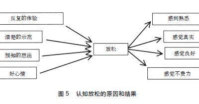

第5章 你的直觉有可能只是错觉
在头脑清醒的时候——甚至在思绪并不那么清晰的时候——你的大脑一直在进行着多重运算，这些运算可以保留和更新一些关键问题的答案。例如：有什么新情况吗？存在危险吗？事情进展得顺利吗？我需要转移注意力吗？完成这个任务需要投入更多的精力吗？你可以将大脑想象成飞机驾驶座舱，里面有一套刻度盘，上面显示着这些重要变量的当前数值。系统1会自动对当前这些数值进行评估，因为这些数值的一个重要功能就是决定是否需要系统2提供额外帮助。
其中一个刻度盘测量的是认知放松度。认知放松度介于“放松”和“紧张”之间。放松是事情进展顺利的标志——没有障碍、没有新情况、没必要转移注意力或投入更多精力。紧张说明存在某种问题，且需要不断调动系统2参与其中。如若事情进展不顺利，你便处于认知紧张状态中。认知紧张同时还会受当时的努力程度和未得到满足的需求的影响。令人惊讶的是，一个简单的认知放松过程却与有着多种输入和输出活动的庞大网络相联结。图5对此作了解释。

图5说明如果一个句子印刷清晰，或是被多次重复，或是已经深植于脑海，人们就能在认知放松的状态下顺畅地将其解读出来。听别人说话时，如果心情好，或者咬一支笔迫使自己“笑”，都能使认知放松。反之，若说明书印刷模糊，颜色浅，句子冗长，语言晦涩，也许心情也不好，甚至在皱眉，这些情形都会使人处于认知紧张状态。
造成这种放松或紧张状态的不同原因会相互影响。处于认知放松状态时，你有可能心情不错，因此会喜欢你亲眼所见的事物，相信你亲耳所闻的消息，相信你的直觉，感到当时的状态是舒适而熟悉的。此时，你的想法也有可能相对随意、肤浅。当你感到紧张时，你更有可能警惕、多疑，会对手头上的事情投入更多精力，感觉局促，较少犯错，但你的直觉和创造相较平时会下降。